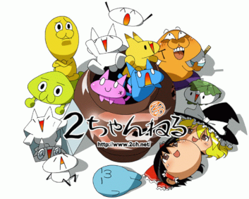

| Головна | Смайлики | Емодзі | Стилі смайликів | The Smiley Company |
Каомоджі — це японські текстові емотикони, які створюються з символів і передають емоції, міміку та навіть дії прямо в тексті. Саме слово походить від японських “kao” (обличчя) та “moji” (символ) . На відміну від звичних нам смайликів типу :-) чи :), каомоджі не потрібно «повертати» вбік — вони читаються прямо, як справжні обличчя. Наприклад:
| (^_^) | радість |
| (T_T) | сум |
| (¬‿¬) | хитра/саркастична посмішка |
| (≧◡≦) | сильна радість |
| (・_・;) | ніяково |
| (╥﹏╥) | плач |
| (ง'̀-'́)ง | готовність до боротьби |
| (￣ω￣) | задоволення |
| (⊙_⊙) | здивування |
| (づ｡◕‿‿◕｡)づ | обійми |
У 1980-х японські користувачі популяризували стиль каомоджі — текстових емотиконів, які можна читати прямо, без нахилу голови. Цей стиль виник на ASCII NET та часто використовував японські символи разом із ASCII. Вакабаясі Ясуші вважається автором оригінального каомоджі (^^) у 1986 році, а подібні символи одночасно застосовувалися на Byte Information Exchange (BIX). На відміну від західних смайликів, у каомоджі головну роль відіграють очі, а не рот, що підкреслює естетику кавайі («милості»). Різні емоції передаються зміною символів для очей, ротів і додаткових елементів, наприклад (T_T) — плач, (x_x) — стрес, (--;) — тривога, а дужки чи декоративні символи можна змінювати або пропускати. Використання Unicode та розширених наборів символів, включно з хіраганою, катаканою, кандзі та символами інших алфавітів, дозволило створювати ще складніші варіанти, як-от:

Японський текстборд (анонімна дошка оголошень) 2channel була однією з найбільших інтернет-спільнот Японії. Оскільки сайт не підтримував вставку зображень, користувачі створювали власні «картинки» за допомогою тексту — мистецтво, відоме як «ASCII Art» або «AA», а точніше «Shift_JIS art» через використання набору символів Shift JIS і нефіксованого шрифту. Багато таких текстових образів перетворилися на популярні меми: персонажі, як Мона та Неко Ґіко, стали символами японської інтернет-ідентичності, а їхня естетика вплинула на ранні мобільні емодзі і пізніше поширилася на західні платформи, де приклади у стилі 2channel, наприклад «перевертаю столи» (╯°□°）╯︵ ┻━┻, стали глобальним інтернет-феноменом.
У культурі 2channel особливе місце займає так звана «велика четвірка котиків» — персонажі-каомоджі, які стали символами спільноти та інтернет-мемів. До них входять:
∧＿＿∧ ／￣￣￣￣
（ ´∀｀） ＜ Look who's talking!
（ ） ＼＿＿＿＿
｜ ｜ |
（ ＿)＿)
|
Λ＿＿Λ ／￣￣￣￣￣￣￣￣￣￣￣￣￣￣￣
（ ・∀・）＜ Please be quiet, I'm trying to study.
＿φ＿__⊂)_ ＼＿＿＿＿＿＿＿＿＿＿＿＿＿＿＿
／旦／三／ ／|
|￣￣￣￣￣ | |
| Oranges.|／
|
＿＿＿_ ∧ ∧
～' ＿＿__(,,ﾟДﾟ)
ＵU Ｕ U
|
∧＿ ∧＿__ ﾀﾞｯｺ♪
／(*ﾟーﾟ) ／＼
／|￣ ∪∪ ￣|＼／
| |／
￣￣￣￣
|
| Мона | Моралар | Ґіко | Шіі |
Каомоджі стали невід’ємною частиною японської та світової інтернет-культури, дозволяючи передавати емоції, дії та настрій лише за допомогою символів. Вони еволюціонували від простих облич (^_^) до складних персонажів, як Мона та Неко Ґіко, а також інших популярних каомоджі, таких як обличчя Ленні
( ͡° ͜ʖ ͡°) чи «не знаю» ¯\_(ツ)_/¯. Сьогодні каомоджі продовжують надихати цифрове мистецтво, меми та спілкування, демонструючи, наскільки творчо можна використовувати звичайні символи для вираження почуттів.